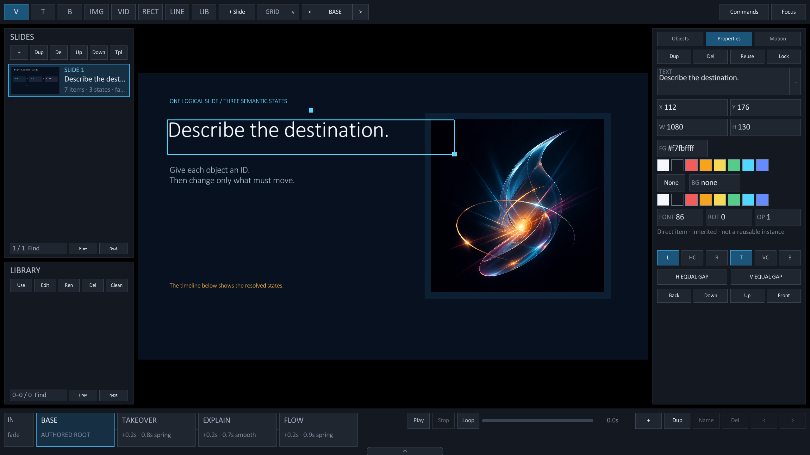
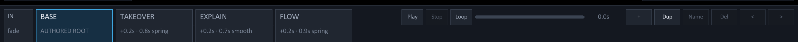
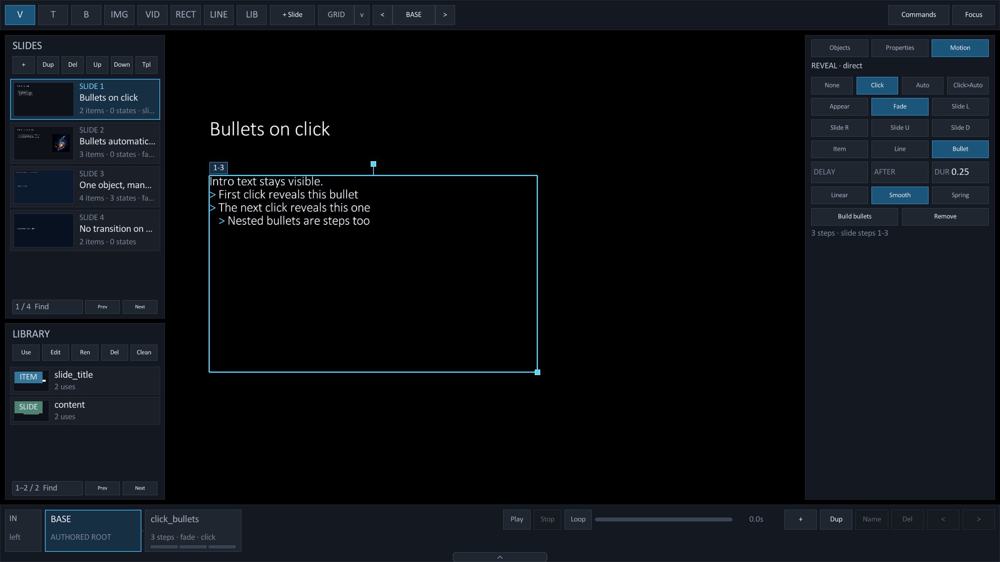
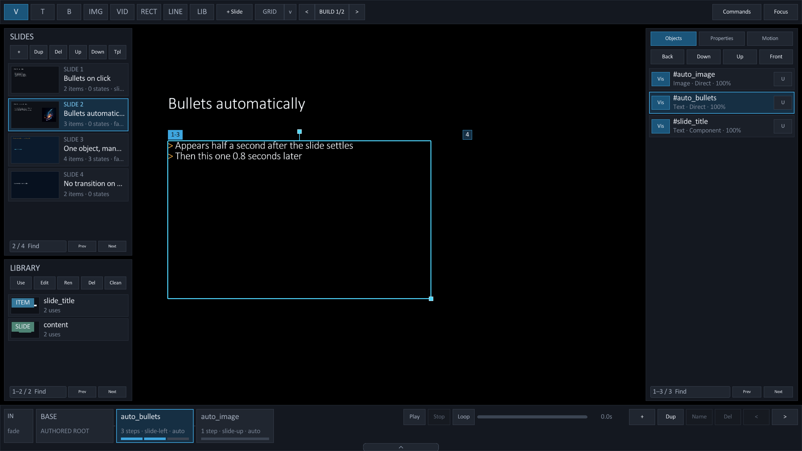
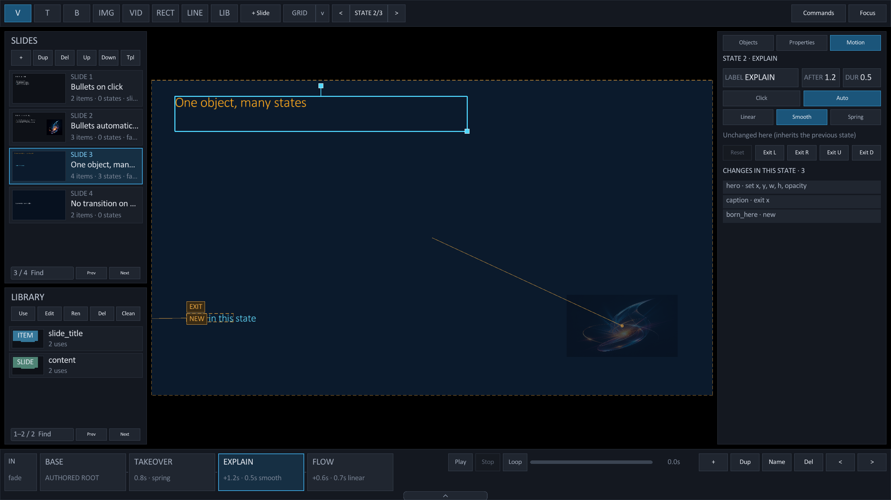
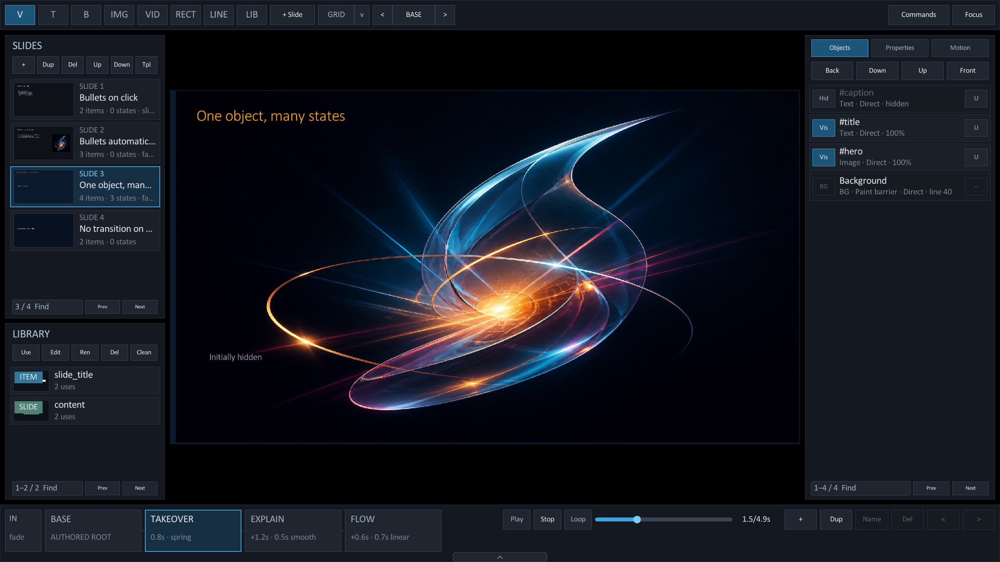

Motion
Add motion to a deck.
Rayslides supports three motion types. Each type changes a different part of the presentation.
Choose the motion type
Reveal items
Place @anim(...) before the item that must appear later.
@anim(fade) by=bullet duration=0.25
@box x=140 y=250 w=900 h=500
- First point
- Second point
- Third pointThe forward controls reveal the next step. The backward controls hide the current step.
| Grouping | Result |
|---|---|
by=item | Rayslides reveals the complete object. |
by=line | Rayslides reveals each non-empty source line. |
by=bullet | Rayslides reveals each bullet line. Other lines stay visible. |
Effects include appear, fade, and four slide directions.
Add after=0.8 to start a step after the previous motion ends.
| Timing key | Result |
|---|---|
after=0.8 | Each later step starts 0.8 seconds after the previous motion ends. Without it, every step waits for a click. |
delay=0.5 | The first step starts 0.5 seconds after the slide settles. Alone, it makes only the first step automatic. |
delay=click | The first step waits for a click. Later steps follow after= automatically. |
ease=spring | Use linear, smooth (default), or spring for the reveal. |
order=1 | Sort this build later than builds with a lower order. Ties keep source order. |
anim=none | No reveal. On a @pop it cancels a reveal inherited from the @push. |
@anim(slide-left) by=bullet delay=0.5 after=0.8 duration=0.25 ease=spring
@box x=140 y=250 w=900 h=500
- Appears half a second after the slide settles
- Then this one 0.8 seconds later@anim accepts only its documented keys. An unknown key such as name= is a parser error.
Move between slides
Set a transition on a slide or a slide template.
@pushslide content transition=slide-left duration=0.35
@popslide content transition=fade duration=0.5The transition moves the old and new slides together. Backward navigation reverses the direction.
Use transition=none to disable the inherited transition for one slide. Add ease=linear|smooth|spring on the same line to choose the transition curve.
Set a deck-wide default once in the preamble. A slide or template that sets its own transition= keeps that value.
@transition=fade
@transition_duration=0.35
@transition_ease=smoothChange one slide with morph states
A morph state changes named objects. Give each target a stable id=.
Then add a state and set only the values that must change.
@box id=photo img=assets/photo.png x=1210 y=250 w=610 h=347
@state(morph) label=TAKEOVER duration=0.8 ease=spring
@set photo x=0 y=0 w=1920 h=1080Use state directives
| Directive | Use |
|---|---|
@set name ... | Change one or more values. |
@hide name ... | Hide an object. You can also move or style it. |
@show name ... | Show a hidden object. You can also change it. |
@box inside a state | Create an object in that state. |
Values that interpolate
Rayslides interpolates geometry, font size, colors, opacity, media focus, corner radius, line geometry/stroke, text shadows, and rotation. Rotation follows the shortest arc, so 350 to 10 turns 20° instead of unwinding a full circle.
Changed text and changed images use a cross-fade. New and removed objects also use a cross-fade.
Edit morph states in Studio
Select a named object and a semantic state in the same source-backed workspace.

.sld source.The bottom timeline shows the incoming transition chip, the base scene, one BUILD card per reveal, and each resolved state.

| Control | Action |
|---|---|
| IN | Open the Transition section for this slide's incoming transition. |
| BASE | Show the fully revealed authored scene. |
| BUILD card | Show the slide through that reveal's last step and select its object. A step chip narrows to one step. |
| + | Append a cumulative morph state and open Motion for its timing. |
| Dup | Insert a new state from the selected snapshot. |
| Name | Give the selected state a source-backed label. |
| Del | Delete the complete selected state block. |
| < · > | Move the selected state, or the selected BUILD, earlier or later. |
| Play · Stop · Loop | Preview the slide from the selected scene. Wider windows add a scrubber and a time readout. |
Edit one state
@set.- Select a state card.
Studio shows the objects after that state and every earlier state.
- Select an object.
The cyan outline identifies the object that will change.
- Move it or change a property.
Studio writes only the values that differ.
- Use [ and ].
These keys cycle BASE, each build, and each state.
Read the state values
A card shows the delay, duration, and easing from its @state(morph) line.
@state(morph) label=flow after=0.2 duration=0.9 ease=springafterdelays the state after the previous motion.durationsets the motion time in seconds.easesets the interpolation curve.- The source order sets the playback order.
Edit these values in the .sld source or in the Motion tab's State section. Studio reports them on the cards.
The BASE card is the authored root. You cannot rename, remove, or move it.
Author motion in Studio
The Motion tab sits beside Objects and Properties. It writes the same @anim, @state(morph), and transition keys shown above, and every change is one undo step.

Build bullets
- Select a text box.
Open the Motion tab or choose Show Motion in Commands.
- Choose Build bullets.
Studio writes
@anim(fade) by=bulletbefore the box. - Choose a trigger.
Click waits for a click at every step. Auto starts after DELAY and continues after AFTER. Click>Auto waits once, then continues automatically.
- Refine it.
Pick an effect, a grouping, a duration, and an easing. Remove deletes the reveal.
| Section | Appears when | Edits |
|---|---|---|
| Reveal | An object is selected in BASE or a build scene. | Trigger, effect, By item/line/bullet, DELAY, AFTER, DUR, easing, Build bullets, Remove. |
| State | A STATE card is active. | LABEL, AFTER, DUR, Click/Auto, easing, Reset, Exit L/R/U/D, and the list of changes in this state. |
| Transition | Nothing is selected in BASE, or the IN chip is clicked. | Inherit/None/effect, DUR, easing, Use for deck, Clear deck. |
The Transition section reports where the value comes from: this slide, a template, or the deck default. Use for deck writes the @transition*= preamble lines. On a template-backed slide, hold Alt to change the template instead of the instance.
Read the timeline
Every object with a reveal shows a numbered badge on the canvas and a BUILD card in the timeline.

See where objects come from
With a state selected, Studio draws a dashed ghost at each changed object's previous position and a path to its new center. Objects born, hidden, or shown in the state carry NEW, EXIT, or SHOW chips.

With an object selected in a state, Reset removes every change to it in that state. Exit L/R/U/D hides it just beyond the chosen slide edge.
Preview the timing
Press Shift + Space or click Play in the timeline. Studio plays the real reveal, morph, and transition timing on the canvas from the selected scene.

- The preview pauses on the last frame. Stop or Esc returns to the selected scene.
- Loop restarts the preview until you stop it.
- Any source edit, undo, scene change, tool change, or canvas drag stops the preview.
- Videos stay on their poster during a preview.
See a rendered state
This showcase state moves and restyles the same named objects into a two-way relationship.

Export animated slides
A PDF contains one page for each logical slide. Rayslides renders the final reveal and morph state.
A transition does not add a PDF page.
Next guideUse a phone while you present→